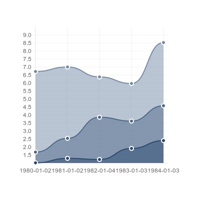
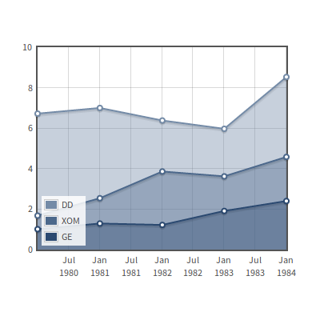
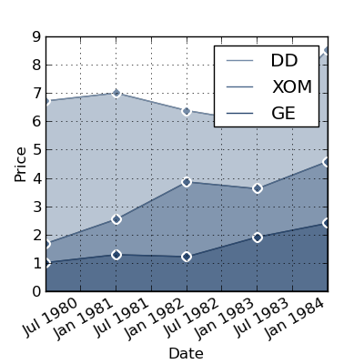

Chart.js version 8f025f33c0
|
 |
<script src="Chart.js"></script>
<canvas id="myChart" width="400" height="400"></canvas>
var ctx = $("#myChart").get(0).getContext("2d");
new Chart(ctx).Line(data,options);
|
var data = {
labels: ["1980-01-02", "1981-01-02", "1982-01-04",
"1983-01-03", "1984-01-03"],
datasets: [
{
fillColor : "rgba(116,139,167,0.5)",
strokeColor : "rgba(116,139,167,1)",
pointColor : "rgba(116,139,167,1)",
pointStrokeColor : "#fff",
data: [6.72, 7.00, 6.38, 5.97, 8.53]
},
{
fillColor : "rgba(76,104,139,0.5)",
strokeColor : "rgba(76,104,139,1)",
pointColor : "rgba(76,104,139,1)",
pointStrokeColor : "#fff",
data : [1.68, 2.54, 3.86, 3.62, 4.58]
},
{
fillColor : "rgba(43,73,112,0.5)",
strokeColor : "rgba(43,73,112,1)",
pointColor : "rgba(43,73,112,1)",
pointStrokeColor : "#fff",
data: [1.01, 1.29, 1.22, 1.91, 2.40]
}
]
}
|
Javascript |
Oct 2013 |
No |
No |
Flot 0.8.3
|
 |
.demo-placeholder {
width: 100%;
height: 100%;
font-size: 14px;
font-family: 'Source Sans Pro', sans-serif;
line-height: 1.2em;
}
<div class="demo-container">
<div id="placeholder" class="placeholder"></div>
</div>
$.plot("#placeholder", [
{ data: dd, label: "DD", points: {show: true}, lines:
{show: true, fill: true}, color: '#748BA7' },
{ data: xom, label: "XOM", points: {show: true}, lines:
{show: true, fill: true}, color: '#4C688B' },
{ data: ge, label: "GE", points: {show: true}, lines:
{show: true, fill: true}, color: '#2B4970' }
], {
xaxes: [ { mode: "time" } ],
yaxes: [ { min: 0 } ],
legend: { position: "sw" }
});
|
var dd = [[Date.parse("1980-01-02"), 6.72],
[Date.parse("1981-01-02"), 7.00],
[Date.parse("1982-01-04"), 6.38],
[Date.parse("1983-01-03"), 5.97],
[Date.parse("1984-01-03"), 8.53]];
var xom = [[Date.parse("1980-01-02"), 1.68],
[Date.parse("1981-01-02"), 2.54],
[Date.parse("1982-01-04"), 3.86],
[Date.parse("1983-01-03"), 3.62],
[Date.parse("1984-01-03"), 4.58]];
var ge = [[Date.parse("1980-01-02"), 1.01],
[Date.parse("1981-01-02"), 1.29],
[Date.parse("1982-01-04"), 1.22],
[Date.parse("1983-01-03"), 1.91],
[Date.parse("1984-01-03"), 2.40]];
|
Javascript |
Apr 2014 |
Yes |
No |
| Matplotlib 1.2.1 |
 |
import datetime
import matplotlib.pyplot as plot
def do_plot(y, color, label):
plot.plot(dates, y, color=color, label=label)
plot.plot(dates, y, color=color, linestyle='None', marker="o",
markersize=7, markeredgecolor='w', markeredgewidth=1.5)
plot.fill_between(dates, y, facecolor=(color,), alpha=0.5)
do_plot(dd, '#748BA7', "DD")
do_plot(xom, '#4C688B', "XOM")
do_plot(ge, '#2B4970', "GE")
plot.legend()
plot.ylabel("Price")
plot.xlabel("Date")
plot.grid()
plot.gcf().autofmt_xdate()
plot.gcf().set_size_inches(4, 4)
plot.savefig('matplotlib-line.png', dpi=100)
|
dates = ("1980-01-02", "1981-01-02", "1982-01-04", "1983-01-03", "1984-01-03")
dates = tuple(datetime.datetime.strptime(date, "%Y-%m-%d") for date in dates)
dd = (6.72, 7.00, 6.38, 5.97, 8.53)
xom = (1.68, 2.54, 3.86, 3.62, 4.58)
ge = (1.01, 1.29, 1.22, 1.91, 2.40)
|
Python |
June 2014
|
Yes |
Yes |